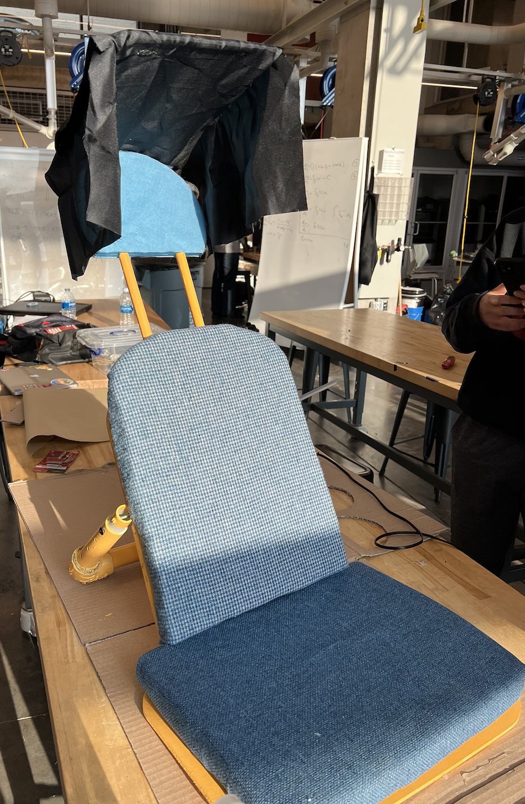
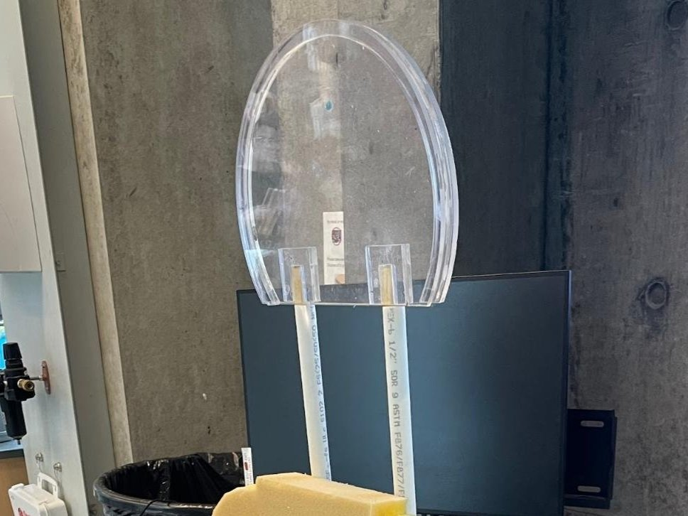
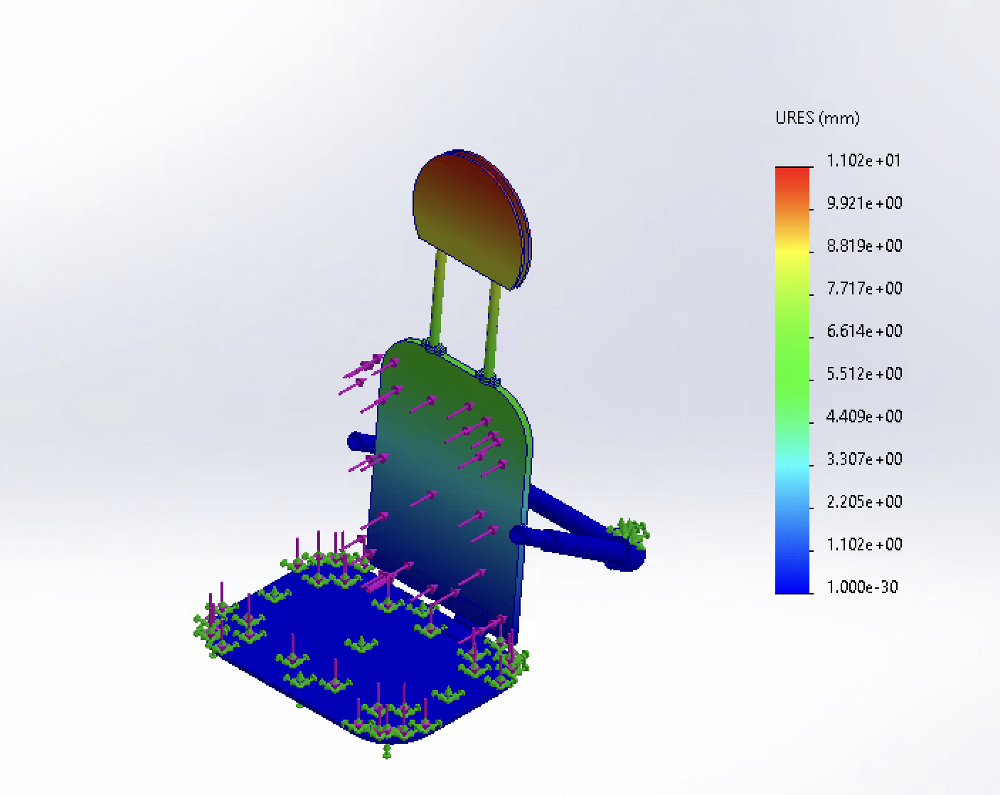
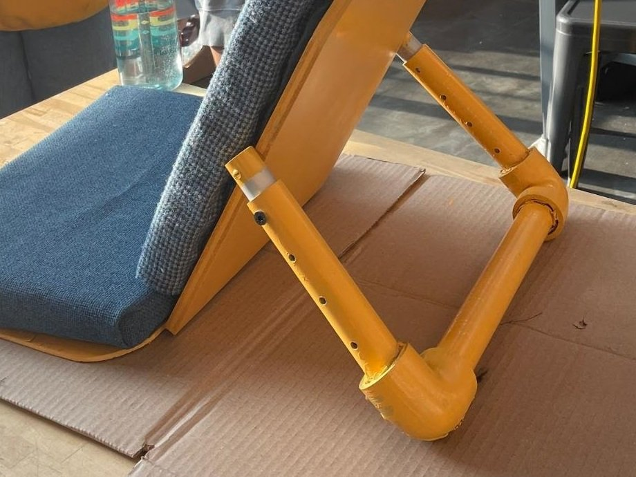

The aim of this project was to design and build a collapsible chair for passengers of a hypothetical airline that required customers to bring their own chairs.
We began with identifying a specific user group — college students taking red-eye flights — and conducted surveys to identify the user groups’ desires for this product.
Our primary criteria of the design were as follows:
- Intuitively collapsible and easy to carry
- Comfortable cushioning and reclining feature
- Fit user heights from 4’8 to 6’2
We built a prototype model of our design which featured telescoping pipe back supports, a torque hinge seat connector, and an adjustable height headrest. In order to validate this design as a real product, we analyzed the manufacturability and cost of this design at scale.
Collaborators: Catherine Or and Giselle Obergfell



